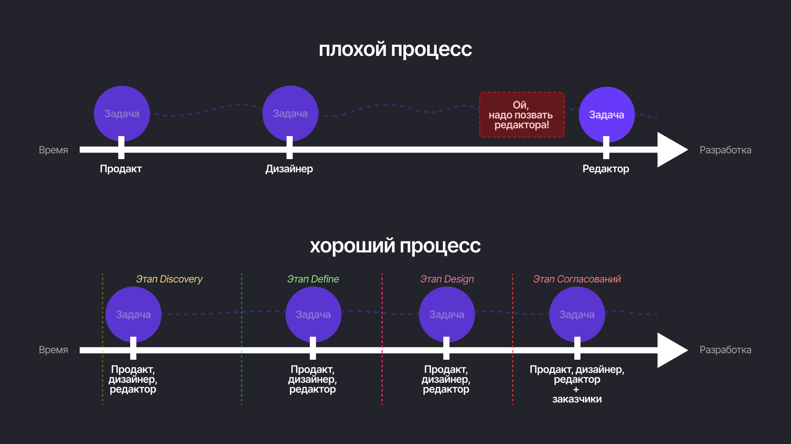
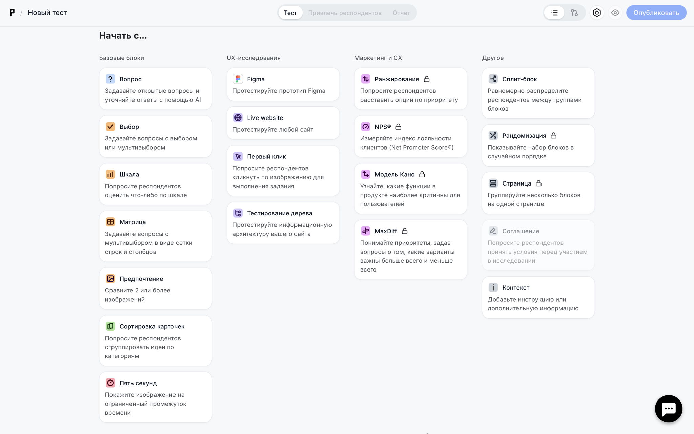
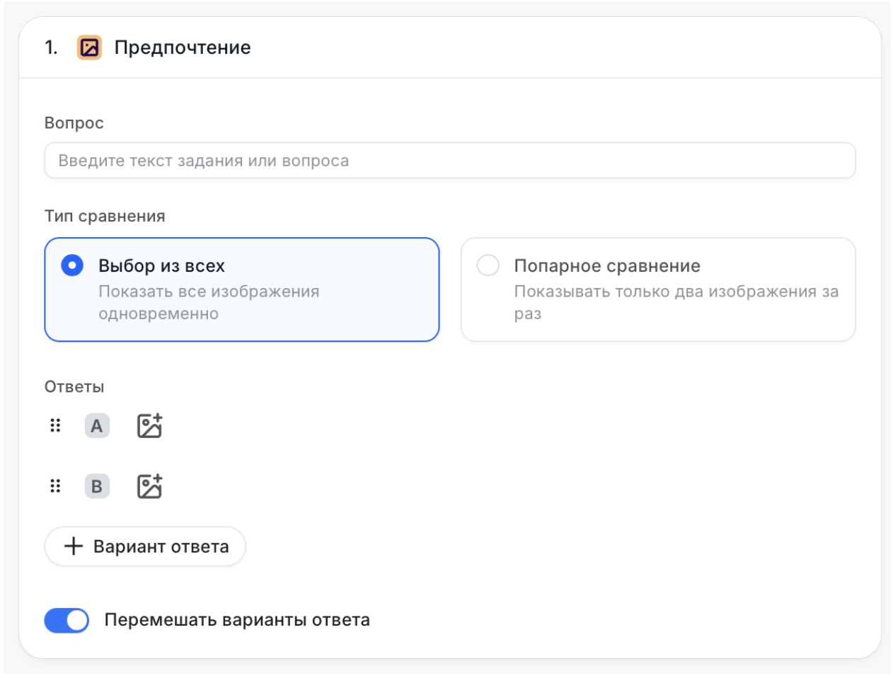
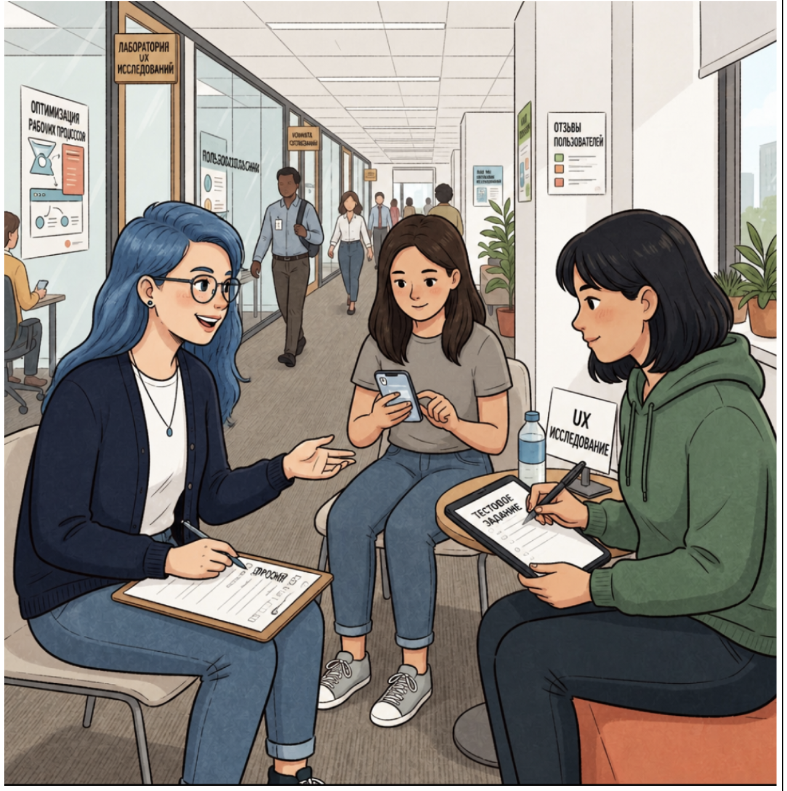
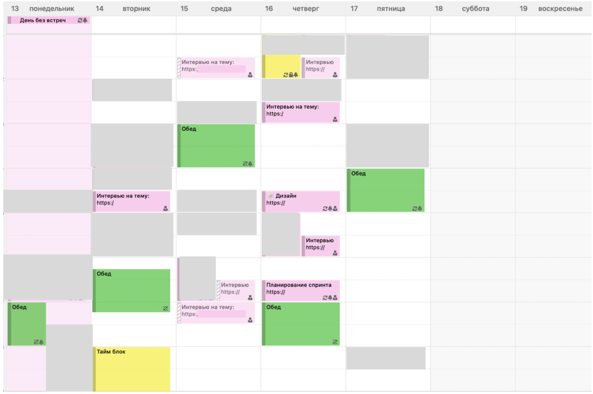
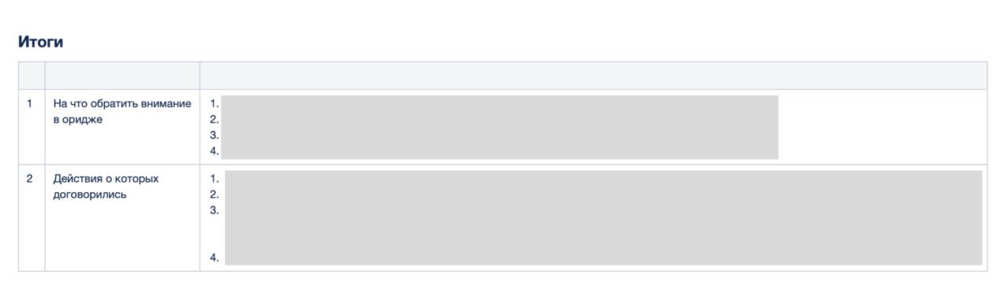

В работе UX-редактора есть классическая плохая ситуация, с которой сталкивался почти каждый: тебя зовут на финишной прямой, когда макеты уже полностью готовы, и просят за 30 минут «глянуть свежим взглядом» и поправить кнопку или заголовок.Часто менеджеры или дизайнеры приходят с не совсем адекватными дедлайнами — задача горит, а релиз через три дня. При этом они не описывают контекст и не погружают в проблему. Им кажется, что там делов на пять минут, а на самом деле за такими фразочками скрывается полноценная работа на целый спринт.
Нужно закопаться в проблему, почитать исследования, посмотреть конкурентов, пообщаться со смежными командами и только потом писать. Если изначально сроки оценили криво, в итоге получится, что вы как будто затягиваете процесс. Но это происходит не потому, что вы плохо работаете, а потому, что задачу изначально плохо поставили. Таких ситуаций стоит избегать.
Ситуации в командах бывают разные:
-
Всё в одном лице (редактор = дизайнер). Этот человек сам на этапе написания текстов и продумывания дизайна учитывает обе составляющие. Но для этого нужен высокий уровень навыков. Именно такими самостоятельными специалистами вы и станете после курса.
-
Редактор «на подмоге». Его зовут, когда уже всё готово и надо только текстики поправить. Этот процесс мы подробно разбирать не будем, так как он неправильный. Но мы его тоже обсудим.
-
Редактор в большой команде. Он подключается ещё на этапе исследования, работает в связке с дизайнером и понимает все ограничения. Этот человек может и сам что-то в Figma поменять, и текст на кнопку примерить, и даже целый экран собрать из компонентов дизайн-системы. Это самостоятельный редактор, на которого могут положиться и которому готовы много платить. Именно такими редакторами мы хотим вас сделать.

Давайте разберём, как выглядит нормальный продуктовый цикл.
1. Этап Discovery (Исследование)
Когда редактор погружается в проблему, он по-хорошему должен изучить не только ТЗ, а ещё посмотреть, как всё устроено у конкурентов. То есть проанализировать бенчмарки и пройтись по рынку. Можно скачать похожие приложения или походить по сайтам. В идеале — посмотреть на опыт зарубежных приложений. Там иногда встречаются решения, которых ещё просто нет на российском рынке, и это довольно любопытно поизучать. Классно самому пройти путь пользователя, чтобы посмотреть, какие вопросы и проблемы возникают на пути решения конкретной задачи. На этом этапе могут прийти светлые мысли, которые здорово зафиксировать и приложить к описанию задачи.
Быстрые тесты
В исследованиях редактор может участвовать по-разному. Первый вариант — быстрый тест, например, на платформе Pathway, чтобы проверить какие-то точечные решения. Допустим, есть неуверенность в конкретной формулировке — поймут ли пользователи?
Для таких ситуаций подобные площадки отлично подходят. Можно сделать макет экрана, выделить потенциально непонятную фразу и составить вопрос. Допустим, вы боитесь, что люди не поймут формулировку «налог 13%». Можно сделать макет экрана с деталями расчёта налога и спросить: «Как вы думаете, что означает этот текст?».

У Pathway большой выбор тестов
Тут обязательно нужно задавать открытые вопросы. Не стоит формулировать в духе: «Как вы думаете, налог 13% означает то, что у вас с дохода удержится 13%?». Вопросы, на которые ответ будет однозначно «да» или «нет», задавать не стоит, для исследований они вообще не подходят. У Pathway, кстати, есть неплохой гайд по немодерируемым исследованиям, очень советую почитать — там много полезного.
Ещё на таких площадках удобно проверять формулировки в контексте ассоциаций. Допустим, вы не знаете, как назвать какой-нибудь раздел, или хотите ввести новый термин, и вам нужно понять — а как люди вообще называют его в быту? Можно пойти в Wordstat, а можно описать термин и предложить респондентам назвать его одним-двумя словами.
|
 |
Например, вы хотите придумать название для раздела со скидками на маркетплейсе. Можно сформулировать так: «Как бы вы назвали раздел, в котором будут собраны все скидки и выгодные предложения?». Смотрите, что вам ответят, вдохновляетесь и используете. Ещё на быстрых тестах можно предлагать выбирать между двумя вариантами одного экрана — если сомневаетесь, какой заголовок или картинка людям больше понравятся.
Совместные исследования
Второй вариант — можно поучаствовать в исследованиях вместе с дизайнерами или продактами. Я сама ходила на тесты со своими коллегами. Есть два варианта рекрута респондентов: внешний и внутренний.
Внешний рекрут означает, что агентство, с которым сотрудничает компания, ищет людей снаружи. То есть это респонденты, которые не являются сотрудниками компании. И это лучший вариант, потому что они не погружены в проблему, не знают контекста — это обычные пользователи, которые как раз вам и нужны.
Но не всегда на такой рекрут есть деньги и ресурсы, поэтому иногда приходится проводить так называемые коридорные исследования. Это когда вы идете к своим же коллегам, в идеале не связанными с дизайном. Это могут быть эйчары, бухгалтеры, юристы — люди, которые не знают, как устроен ваш продукт.
Мы с дизайнером весной работали над одним разделом, ходили к эйчарам, показывали им прототип и задавали вопросы. Ходить вдвоём при этом очень удобно — как на коридорные исследования, так и на тесты с внешними респондентами. Пока один человек задаёт вопросы и ведет встречу, другой может фиксировать важные моменты и следить за тем, чтобы все вопросы были заданы.

В идеале у вас должен быть сценарий исследования. Его может помочь составить UX-исследователь, если в команде есть такой специалист. Если нет, тогда нужно самим составлять сценарий — то есть буквально прописывать, как респондент будет идти по вашему флоу и какие вопросы вы будете ему задавать.

Однажды у меня было довольно много интервью. Серым замазаны другие встречи
Это суперважно. Если заранее этого не сделать (особенно если вы не так часто проводите исследования), в процессе можно запутаться, что-то забыть спросить или спросить не так, как стоило бы. Лучше всегда заранее иметь какой-то план. Обычно происходит так, что мы с дизайнером или продактом ходим вдвоем на такие встречи: дизайнер задает вопросы, я фиксирую ответы и тоже что-то по ходу комментирую или спрашиваю. Но бывают случаи, когда мы с дизайнером и продактом делим респондентов между собой, и тогда редактор может сам провести полноценное интервью. Главное, чтобы у всех участников исследования был одинаковый прототип и одинаковый сценарий. И потом очень важно собраться после встреч, проговорить результаты, зафиксировать итоги исследований в одном общем отчёте и вывести инсайты, чтобы у всей команды была одна и та же информация.

Можно вот так организовать итоги интервью и дальнейшие шаги. Ниже конспекты и записи встреч с респондентами
Почитать по теме: статья про UX-тесты